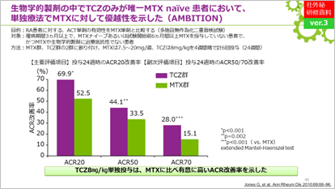
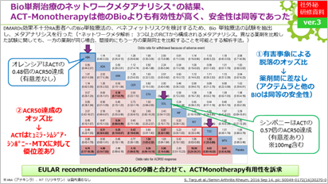

9. EULAR recommendations no.9にIL-6阻害薬の単剤有用性が記載されています？

EULAR recommendations no.9にIL-6阻害薬の単剤有用性が記載されており、KEVは「MONARCH試験」において単剤治療でヒュミラに対する優越性を示した初のIL-6皮下製剤です。

EULAR recommendationでIL-6阻害薬の単剤有用性に関する記述の引用は、KEVではありません。ADACTAやAMBITION、ACT-RATやSURPRISEといった国内外の先生方からのACTの複数のエビデンスが、これまでのGuidelineやrecommendationを牽引してきており、KEVは便乗しているだけである事を是非ご理解ください。
KEVには単剤での骨関節破壊抑制データがなく、国内添付文書には『関節の構造的損傷の防止を含む』の記載もありません（MTX併用の日本人データもなし）。なお、ACTはMTX-naive患者さんに対するMTXとの直接比較で優位性を示した「AMBITION試験」の結果を有していますが、KEVには同様のデータがありません。他にもACTでは他Bio製剤に比較して単剤での有効性が高く、安全性は同等であることも既に報告されております。ACTとKEVでは保有する単剤エビデンス量が異なりますね。


ACTはBio単剤治療のパイオニアとして豊富なエビデンスを有する